Guide de première utilisation
L'Ingénieure, propriétaire de l'application
Ce qu'il faut faire, et dans quel ordre
| Application | Nourane Génie Civil, gestion des coûts de construction |
| Pour aller plus loin | Manuel de l'Ingénieure |
| Date | Octobre 2026 |
L'Ingénieure, propriétaire de l'application
Ce qu'il faut faire, et dans quel ordre
| Application | Nourane Génie Civil, gestion des coûts de construction |
| Pour aller plus loin | Manuel de l'Ingénieure |
| Date | Octobre 2026 |
L'application démarre vide : c'est l'ingénieure qui la met en place. Sans compte, ni le client ni le chef de chantier ne peuvent se connecter ; sans projet lancé, le chef ne peut rien saisir ; sans budget, aucun écart ne se calcule. L'ordre des premières étapes compte donc.
Ensuite, le travail devient régulier : le chef de chantier saisit les dépenses et l'avancement, le client déclare ses versements, et vous validez. Plus vous validez vite, plus le tableau de bord, les alertes et l'analyse sont à jour.
Le schéma de la page suivante montre ces dépendances. Une flèche signifie « doit exister avant ». Les cases en pointillés sont faites par d'autres que vous.

| Pour… | Il faut d'abord… | Où |
|---|---|---|
| Créer un projet | Le compte du client (rôle Client) | Utilisateurs |
| Désigner le chef de chantier | Son compte (rôle Chef de chantier) | Nouveau projet ou Paramètres |
| Saisir le budget initial | Le projet et ses lots, au statut « En préparation » | Budget |
| Laisser le chef saisir | Le projet « En cours » et le chef désigné | Paramètres |
| Réviser le budget | Le projet lancé ; un motif | Budget, Nouvel avenant |
| Rejeter ou annuler une dépense | Un motif ; pour annuler, une dépense déjà validée | Dépenses |
| Obtenir le coût final estimé | Des dépenses validées et un avancement validé | Tableau de bord, Analyse |
| Obtenir la prévision par régression | Au moins 3 jours de dépenses validées, projet non terminé | Analyse |
| Juger un prix unitaire | L'article du catalogue choisi, et au moins 4 achats validés de cet article | Analyse, Dépenses |
| Comparer le coût au m² | La surface bâtie de chaque projet | Comparaison |
| Joindre les photos | Le stockage des photos configuré (Backblaze B2) | Formulaires de dépense et d'avancement |